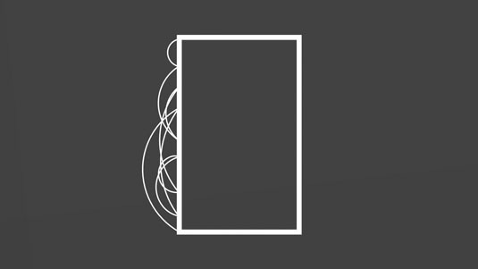
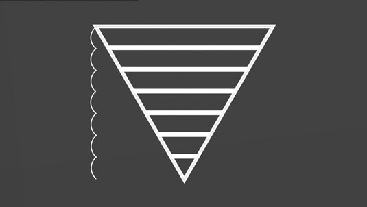

CSS schrijven
is simpel...
Complexiteit in CSS
- Ins & outs van CSS
- Structuur
- Verantwoordelijkheid
- Inconsistentie
Eigenaardigheden
van CSS
Cascade
Specificity
- Elementen & pseudo-elementen
::before
- Classes & pseudo-classes
:hover
- ID's
- Inline styles
!important
Inheritance
Deze is rood.
Deze is blauw.
Source order
CSS:
.c-red {
color: red;
}
.c-blue {
color: blue;
}
|
HTML:
Rood. Of toch niet?
|
* verplicht kattenplaatje
Waaraan herken
je complexiteit?
Qualified selectors
/* Meh */
div ul li a {
font-weight: bold;
text-decoration: underline;
color: red;
}
Qualified selectors
/* Beter */
/* Sensible default */
a {
text-decoration: underline;
}
/* Class voor specifieke styling */
.list-link {
font-weight: bold;
color: red;
}
Resetten van default properties
/**
* Responsive table
*/
/* Meh */
td {
display: block;
}
@media screen and ( min-width: 640px ) {
td {
display: table-cell;
}
}
Resetten van default properties
/* Beter */
@media screen and ( max-width: 640px ) {
td {
display: block;
}
}
Te hoge specificity
/* Meh */
#product-list .product h3 a {
font-weight: bold;
color: red;
}
#sidebar .block h2 a {
font-weight: bold;
color: red;
}
Te hoge specificity
/* Beter */
.title-link {
font-weight: bold;
color: red;
}
Inconsistentie
- Veel onnodige variantie
- Tekstgrootte, kleurgebruik, functionaliteit
- Verwarrend!
Inconsistentie
- Overleg met klant en/of designers
- Breng variaties en uitzonderingen terug
- Creëer een systeem van logische keuzes
CSS Components
met behulp van:
-
ITCSS
-
BEM
-
OOCSS (+ mixins)
-
Atomic Design
ITCSS
Inverted Triangle CSS

ITCSS - structuur
┌── settings/
│ ├── colours.scss
│ └── grid.scss
├── tools/
│ ├── functions.scss
│ └── mixins.scss
├── generic/
│ └── normalize.scss
├── base/
│ ├── forms.scss
│ └── typography.scss
├── objects/
│ ├── media.scss
│ └── grid.scss
├── components/
│ ├── main-nav.scss
│ └── article-list.scss
└── trumps/
└── helpers.scss
Zonder ITCSS


Met ITCSS


Waarom ITCSS?
- Vermindert problemen met
source order en specificity
- Verbetert gemak onderhoud
en doorontwikkeling
- Moedigt aan tot nadenken
scheiding objects en components
BEM - Block, Element, Modifier
/**
* Product item component
*/
// Block
.product { [...] }
// Elements
.product__title { [...] }
.product__image { [...] }
// Modifiers
.product--highlighted { [...] }
.product__thumb--large { [...] }
Blocks, Elements, Modifiers
Productnaam
Beschrijving van product
€ 42,-
Voordelen van BEM
- Verdeelt styling in componenten
- Uniforme naamgeving over hele codebase
- Relaties tussen elementen af te leiden uit HTML
- Lage specificty
OOCSS
Object-oriented CSS
OOCSS — principes
- Separate containers from content
- Separate structure from skin
Separate containers from content
/* Meh */
#sidebar h3 {
font-size: 2em;
color: #f30;
}
#footer h3 {
font-size: 2em;
color: #f30;
}
|
/* Beter */
.sub-heading {
font-size: 2em;
color: #f30;
}
|
Separate structure from skin
.btn-primary {
border: 2px solid orangered;
border-radius: 3px;
padding: .33em .66em;
font-size: 1.2rem;
font-weight: bold;
background: orange;
}
|
.btn-default {
border: 1px solid limegreen;
border-radius: 3px;
padding: .25em .5em;
font-size: 1rem;
font-weight: normal;
background: lime;
}
|
Separate structure from skin
/* Structure */
.btn-medium {
border: 1px solid;
padding: .33em .66em;
}
.btn-large {
border: 2px solid;
padding: .25em .5em;
}
|
/* Skin */
.btn-primary {
border-color: orangered;
font-size: 1.2rem;
font-weight: bold;
background-color: orange;
}
.btn-default {
border-color: limegreen;
font-size: 1rem;
font-weight: normal;
background-color: lime;
}
|
OOCSS Mixins
/* Structure */
@mixin btn-medium {
border: 1px solid;
padding: .33em .66em;
}
@mixin btn-large {
border: 2px solid;
padding: .25em .5em;
}
|
/* Skin */
@mixin btn-primary {
border-color: orangered;
font-size: 1.2rem;
font-weight: bold;
background-color: orange;
}
@mixin btn-default {
border-color: limegreen;
font-size: 1rem;
font-weight: normal;
background-color: lime;
}
|
OOCSS Mixins
.btn-cta {
@include btn-large;
@include btn-primary;
}
OOCSS Mixins
Extra voordelen:
- Styling zit volledig in CSS ipv verweven met HTML
- Ongebruikte mixins genereren ook geen output meer
- Gzip kan herhaalde CSS properties
veel beter
comprimeren dan herhaalde selectors
[1]
- Simpliciteit van CSS output is hoger
[1]
Meer rules, minder selectors
[1]
Sass Mixins vs Extends: The Data
Atomic Design
- Ontleed pagina's in templates
- Ontleed templates in componenten
- Ontleed componenten in "legosteentjes"
Atoms
- Bouwstenen van het design system
- Basis HTML-elementen
- Componenten die niet kleiner kunnen
Molecules
- Simpelere componenten
- Bestaan uit meerdere atoms
- Verantwoordelijk voor klein deel interface
Organisms
- Complexere componenten van een pagina
- Groepen van molecules of atoms
- Verantwoordelijk grotere delen interface
Templates
- Samengesteld uit molecules en organisms
- Definiëren van contentstructuur
- Wat wordt de vorm van de content?
Pages
- Invulling templates met "echte" content
- Dit is wat de bezoeker te zien krijgt
- Meest concreet van het design system
Waarom Atomic Design?
- Bevordert consistentie
- Aanmoedigen hergebruik
- Elimineert uitzonderingen
- Testen van afzonderlijke onderdelen
- Definiëren van verantwoordelijkheden
Conclusie
- Maak slim gebruik van de features van CSS
- Schrijf niet teveel CSS
- Structureer je stylesheet voor voorspelbaarheid
- Zorg voor uniforme code style in je project
- Ontleed pagina's in herbruikbare componenten
- Ontleed je componenten in herbruikbare mixins